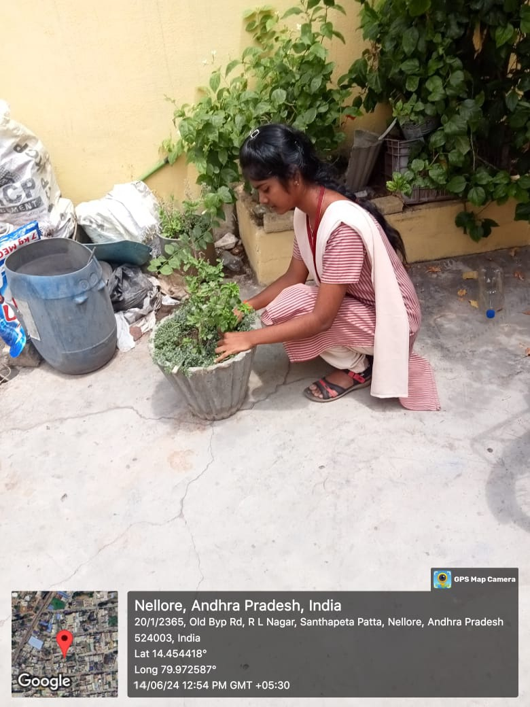
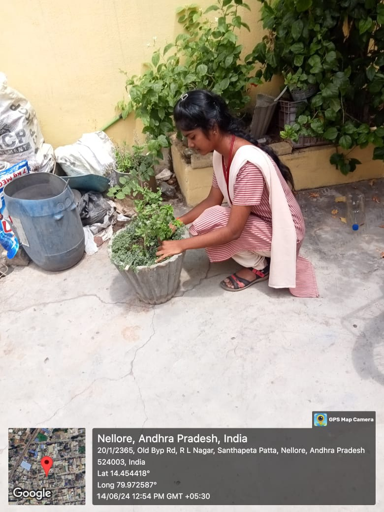
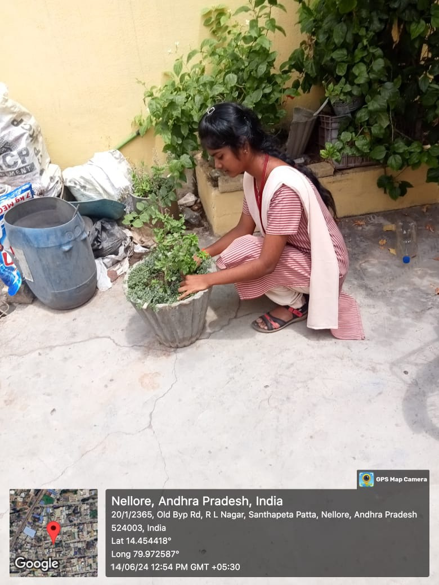

* Visited the local area to assess cleanliness issues and started my Swachh Bharat community service project.
* Obtained permission from the local Sachivalayam to conduct a cleanliness survey in the area.
* Learned how to effectively communicate data in a report format for Swachh Bharat initiatives.
* Developed skills in presenting research on cleanliness and sanitation concisely.
* Practiced revising and improving my writing on Swachh Bharat topics.
* Gained firsthand knowledge about the community's sanitation practices and challenges in maintaining cleanliness.
* Explored current understanding of hygiene practices within the community.
* Identified trends and patterns in waste management within the community.
* Analyzed the relationship between access to sanitation facilities and cleanliness awareness.
* Drew preliminary conclusions about the community's needs related to Swachh Bharat goals.
* Gained a comprehensive understanding of Swachh Bharat guidelines and objectives.
* Created informative resources based on gathered data to promote Swachh Bharat in the community.
* Developed effective workshop structure for Swachh Bharat awareness.
* Enhanced presentation skills for cleanliness and sanitation topics.
* Gained experience in organizing and managing Swachh Bharat workshops.
* Developed skills in facilitating discussions on waste management and hygiene.
* Created evaluation techniques to assess the effectiveness of Swachh Bharat workshops.
* Analyzed data to identify trends in cleanliness and sanitation practices.
* Developed critical thinking skills to interpret data on waste management.
* Identified factors influencing cleanliness in the community.
* Learned to present findings on Swachh Bharat initiatives clearly and concisely.
* Reflected on the strengths and weaknesses of data collection methods for cleanliness surveys.
* Designed effective research instruments for gathering data on sanitation practices.
* Gained practical experience in data collection methods for studying cleanliness habits.
* Developed skills in interpreting data on waste management and hygiene.
* Gained appreciation for the role of cleanliness in shaping local health and environment.
* Improved skills in presenting research on Swachh Bharat initiatives.
* Finalized workshop materials on Swachh Bharat awareness.
* Conducted practice runs of cleanliness awareness workshops.
* Observed participant engagement in Swachh Bharat activities.
* Identified areas of success and improvement in promoting cleanliness.
* Summarized key findings on community sanitation practices.
* Shared recommendations for improving local cleanliness with the broader community.
* Successfully completed the Swachh Bharat project, concluding that the community understood the importance of cleanliness and sanitation.
